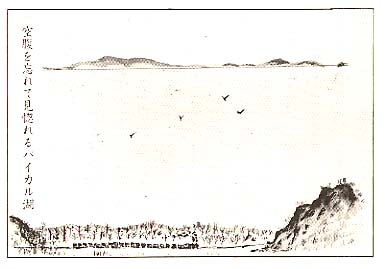
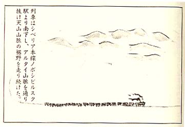

|
 満々たる水を湛え、清冽な紺碧の湖が、山 の端影から展開されてきた。地図を出して見ると、パイカル湖だなーと 直ぐ分った。 右側は、切り立った崖になったり、左側は、波 打ち岸が続いて、白樺の根元を洗ったりしていた。 「広いもんだなー、しかし不思議と一隻の 魚船も見えないなー。これが全面凍り付いた ら物凄いだろう。戦車もトラツクも自由に走 行できるだろうなー。」 今は風光明媚な湖畔の眺めに、しばし人間 の気持を呼び起されたようだった。 バイカル湖の景観は、二日三晩展開されて、 消えた。列車はなおも西方地獄の旅路を急い で驀進した。 沿線その一 虱の熱気消毒 パイカル湖が見えなくなって、原生林だけ が、まだ果てしなく広がる。 列車が急に徐行したかと思ううちに、大き な駅の側線に滑り込んで停車した。ここは、 「イルクーツク」と云う駅だった。 今まで見てきたシベリア沿線駅では、一番大 きな駅だった。乗降客も珍らしく、チラホラと 人影が見えた。すると伝令が命令を伝えてきた。 「この駅で入浴があるので、貨車に持ち込ん でいる装具類一切を携行して、駅裏側に集れ」 腹が減っていてわが身一つを動かすだけで も重いのに、装具を背負っての歩行は重労働 以上だった。 ソ連兵は、人間家畜の群が、一向に動こう としないので、一層甲高い声で、 「ダパイ、ベツソレー（早くせんか）」 と自動小銃のマンドリンを、ぶっ放す剣幕で、 追い立てにかかった。こちらの云い分など、山 羊の鳴き声位にしか聞いていない。追い立てら れるまま、毛布と荷物の入った頭陀袋を背中に 担いで、駅裏の入浴場の板張までやっと歩いた。 そこには、カマボコ型の大きなボイラ釜が、大 口を開けていた。ボイラ室の中には、鉄棒が両 側に取り付けられていて、天井には鉤のついた吊 輪がぶら下っていた。着ている衣服と装具類一切 を結束して、それぞれの鉤の吊り輪に吊り下げた。 我等は素裸のまま、二列に並んで浴場に行 った。浴場は、シャワーになっていた。シャ ワーは時間的に作動することになっていた。 噴出するシャワーで体を洗うのである。 首まで湯に浸って、湯治気分でも味うなど連 想も及ばなかった。それでも久方振りに、頭 からかぶるお湯は、痩せ細った背中を蒸して、 流してくれて、何とも爽快この上もなしだった。 玉音放送以来三ケ月振りの入浴となり、皮膚 の芯まで垢が泌みこんでいたが、お湯で蒸された 垢はボロボロになり、紙屑のように流れ落ちた。 頑健を誇っていた若い現役兵たちも、裸になる とお尻の皮まで老人の様に張りを失い、弛る んで凋んだ格好で、何とも哀れな姿に変り果 てていた。 「あんまり、垢を洗い流すと、体力保全に 役立つ脂肪分まで矢くなり、一段と空腹を感 ずるぞ、垢も少しは貯めておけ」 と皆で笑った。 「シャワーは、時間的に作動するから、早 く洗え、途中で止まったら、石けんの泡をそ のまま体につけて服を着ることになるぞ。」 ソ連兵は、早く洗えと、「ダバイ」を連発 する。そうして板壁の節穴から、何かを懸命に 覗いて、独りで悦に入っていた。あまり独りで 覗くのは勿体ないと思ったのか、その歓びを日 本兵にも一目なりとも見せてやらうと、お前達 も節穴から覗いて見ろと、手招きして誘うのだ った。云われるままに、節穴から順に覗いた。 隣の浴場は、婦人労働者の入浴場になっていた。 節穴は丁度、婦人達の腰の高さの位置になって いたので、裸婦たちの体が隅無くよく見えた。 彼女たちは、みな一様に立ったまま、穴の 方を向いて、石けんの泡を流していた。 乳房はどの婦人も見事に大きく盛り上り、 へそと股間の距離が長く隆起して、日本婦人に 較べて曲線美のボリュームがあった。 婦人達の体を洗う姿勢によっては、股の中 央部が節穴の覗き口を塞ぐほどに至近距離に迫 る。私は愕いて節穴から緊急避難して次の者に 譲った。そのとき西欧の何処かの美術舘に展示 してあると聞く「ルノアール」の代表作とされ る、浴女の裸婦の名画を想い出したのだった。 その名画の裸婦がいま画から抜け出して目の前 に迫り、観賞の機会を与えてくれたが、あま りにも唐突すぎて、観賞どころではなかった。 ソ連兵は、日本兵の覗きが一順すると、ま た割り込んで覗を独占し官能の悦びに浸って 動こうとしなかった。この間は大事に携行し て身から離さなかったマンドリン銃も、床に 放り出して、現を抜かす姿は何とも滑稽だっ た。そうして何回も同じことを繰り返した。 「日本兵よ、よく見たか、（ヤポンスキー ソルダー卜、スマトリ）素晴らしいだろう、 （オーチンハラツショーマラジース）日本婦 人は小さいが、（ヤポンスキマダム、マーリ ンキ）、ロシアマダムは胸のボリュームが素 晴らしいだろう。（ロスキーマダム、ボリツ ショイ、ハラツショ・・・」 と言って威張るのだった。 このソ連兵は、カザフかキルギスかの共和 国の百姓から応召してきた、アジア系人種の兵 士だった。この種のソ連兵が、満州進攻軍第一 線部隊として参戦し、散々に日本同胞に残虐を 加え、また婦女子に暴行を行ったかと思うと、 総身に憤怒を覚えたが、今は施す術はなかった。 彼はスラブ系ロシア裸婦から官能神経を思 う存分に刺激されて、全身が本能的に燃えた。 若し占領地だったら、直ちに襲い掛ったに違 いないだろう。 飢えと衰弱に喘ぎ、やっと生命を繋いでい る今の境遇では、節穴からロシア美人の肉体 をいくら眺めても、青春の五感は鈍化されて いて、肉体的反応は著しく減退していること を、改めて痛感するだけだった。 今では裸女の美人は、絵に画いた「ボタ餅」 に過ぎず、腹の足しにはならなかった。食い 物のパンの一片の方が、遥かに魅力があった。 節穴から絶景を堪能していたソ連警備兵は、入 浴時限が来たので、慌てて整列をせきたてて、 「ダパイーベツソレ。」 と連発し出した。 この声を背中に聞きながら、熱気消毒のボ イラー室扉口まで、全裸で歩いた。 釜の扉を開けると、まだ中の吊輪の装具類 は、熱気に包まれて手がつけられなかった。 発疹チフスの元凶である虱は、全滅したで あろう。ソ連の公衆衛生の一つの重要な柱は、 虱取りらしい。 虱は、褌の中央部の襞のところが、発生源 の巣となっていた。 原隊にいたとき、大曽根一等兵は、同じ褌 を三日もつけておくと、決って褌の中央襞に は、必ず虱の巣となって、幼虫と卵が湧いて いた。いま大曽根一等兵とも、離ればなれて 別行動隊となったが、虱のことでは、直ぐ思 い出す懐しい戦友だった。 また元の道順を消毒済の重い装具を担いで、 貨車の寝床に戻った。褌も軍服も肌襦袢も焼 きたてのホヤホヤで、肌触りが頗る清潔感が あって気分爽快になった。元気の良い若い見 習士官が、顔を火照らせながら、 「みなさん、刺身と熱爛は、どうですか」 「ううむ－おいこら－冗談は止めてくれ、 生唾が出てきて、止らんぞ、腹の虫が咆え出 すではないか！」 切なる表れな衝動に駆られながら、下腹を よぢるように伏せて寝ることにした。 沿線そのニ 囚人列車 「イルクーツク」駅から、シベリア鉄道は、 今までよりは上り下りの列車回数が少し増え てきた。時折りは客車の列車も見かけること もあった。東行きの列車には、これまで二～ 三回人間囚人列車と思われる列車と、擦れ違 うことがあった。何とも奇妙な列車だった。 「チエレンホボ」という駅から発車した翌 日、何処か地名の知れない駅に停った。我等 の貨車が停車した隣の側線に、例の囚人列車 と思われる列車が、レールを軋ませで這入っ てきた停まった。その列車の扉口に掟は、全車輌 にⅩ字型の板が打ちつけられていた。 貨車の扉口の隙間から見えるのは。羊でも 牛でもなく紛れもなく人間の集団だった。 Ⅹ字型の板が外されて、中の人間たちは我 等と同じように、レールの傍で排便排尿行為 に移ったのである。 線路の両側で思いがけなく、彼等囚人らし い人たちと、お尻を向け合って、排泄行為を 営むことになった。これも人間同士の奇縁で あろう。尻を向け合うことで、お互の境遇を 理解し、同情と親しみも湧くようだつた。 更に吃驚したのは、彼等の集団の中には、 老人も子供も婦人もおり、家族ぐるみの集団 であった。話しでいる言葉は、ロシア語だっ た。この集団は、スラブ族西欧ロシア人と 判った。 貨車の上の方に開いている小窓から、幾人 かの顔が重なり合って、我等の方を物珍らしい そうに眺めている者もいた。 排泄行為がすんだ人間たちは、元の貨車に 引き揚げて、婦人達は食事の世話や、子供達 への世話のような、また鍋の蓋を取ったり、 皿を並べたりしていて、どうやら食事の準備 のようであった。彼等はまだ舌の上にのせる 食物を保有していた。この点余所ながら羨ま しくも思えた。 少しロシア語が解るハルピン出身者の年輩 応召兵が、自分の想像も半ば混ぜながら、こ う語ってくれた。 「彼等はどうも、ウクライナ方面に住んで いたらしい。ところがその地区の政治部役所 からの命令で、移動命令が出たらしい。地区 民は取るのも取り敢えず、急拠乗車させられ た。家財道具も持って来れなかった。自分を 見てくれ、この有様だと言って、男は同情を 求めた。 すると今度は婦人が側から、 「妾は家にはミシンも持っていた。羊も、 にわとりも飼っていたが、持ち込み禁止だっ たのよ、一体これから、どうせよと言うので しょうか。私達はそれでも、政治部役所の言 うとおりしないと、暮してゆけないのよ…」 こんな話をしていたと説明してくれた。 「可哀想な国民だね。おれたちよりも酷い 話しだ。戦争は済んで平和が来たと云うのに、 いまだにソ連では、戦時体制か、共産党体制 かを強行しているのであろうか。」 共産党独裁国に対する恐怖感が、新に誘発 する思いだった。 Ⅹ字型貨車乗車の者は、政治犯人でもなく 普通の囚人でもなさそうで、善良な地区人民 だろう。この人民を国家命令で、根こそぎ網 で掬うようにして強制移転させているのであ るとするなら、益々不可解である。 共産党機関で、国策として議決された事項 であれば、人民の人権など微塵も考慮されな いお国柄だ。 戦わざる関東軍将兵や、一般在留邦人を拉 致抑留する位は、別に不思議な事ではないの だろう。こんなソ連の国柄を、見抜けなかっ たのは、日本国為政者の不明の致すところで あり、国民として悔しくもあり、慨嘆に堪え ないのであった。 貨車の中に閉じ籠った四人家族達の低く唄 う民謡が、扉の隙間から洩れて流れてきた。 その謡声は哀調を帯びたメロディーで胸を打 った。 列車は半日問、この退避線から動かなかっ たが、その日の暮れ方に、急に汽笛が鳴り、 また西方に驀進した。囚人のような集団の唄 うメロディーを聞きながら、Ⅹ字型貨車と、 西と東にそれぞれの人間の数奇な運命を乗せ て、永別したのだった。 沿線その三 シベリア流刑地 シベリアの歴史に詳しい中学絞先生の応召 少尉がいた。果てもない旅路の徒然に、彼は シベリア物語の歴史講議をしてくれた。 「シベリアは、その昔パイカル湖東方に居 住していたブリヤード族が支配していたが、 帝政ロシアができてから、ロシア人が支配す ることになった。 帝政ロシア時代は、シベリア地域は、囚人 の流刑地だった。この流刑地には、強制労働 収容所が建てられて、やがて移住者の町とな り発展した。 当初は、欧州ロシアの重犯罪者や社会的危 険分子をシベリアに流刑し、ロシア帝制の安 寧秩序を保持することが、目的だった。 その後スターリン時代に、死刑が廃止にな った頃から、益々この地方への流刑が強めら れて、その後重犯罪者ばかりでなく、窃盗や 傷害犯などすべてシベリア流刑となった。 これらの囚人は、鉱山や道路工事、などの 開発に、強制従事させられることになった。 今では、強制移民や流刑移民の制度も設け られて、シベリア鉄道沿線地区住民は、奥地 を含めて殆んどが、囚人を先祖に持つ人間と 思えばよいのである。 この果しない大地、北極ツンドラ地方まで、 まだまだ何億人という人間を流刑しても、余 裕は充分である。 日本人五千万人位を、流刑または強制移住 させたとしても、輸送力さえあれば、開発し て居住させることが可能である。 我等日本軍俘虜が、日本人流刑者の第一号 となるかも分らぬのだ。 終戦当時、ソ連ゲーペーウに戦犯として、 マークされた者は、洩れなく逮捕され、人跡 未踏に等しいヤクート自治共和国の「マガタ ン」など、北極地区まで流されておるとも云 う。この地方に流された者は、恐らく一人で も生還はできぬだろう。 北極地区に送りこまれたら、白夜と言って、 昼と夜の区別がつかぬそうだ。われわれは、 西方は地獄などと言っているが、ヤクート地 区に較ぶれば西方は極楽だよ・・・・」 それからまた、この先生は特秘情報を流す のだった。 「カスピ海に注ぐボルガ川流域の住民は、 今度の独ソ戦では、随分と功績を残したにも かかわらず、ボルガ川流域の人民と、ウクライナ地 区住民に対しては、殻類の生産割当があまり にも不当にきびしくなり、農民達がこれに対 抗して、大規模の一揆を起したらしい。それ で政府は、この地域住民何百万人かを、シベ リア僻地に送り込んでいる。 途中で行き違ったⅩ字型貨車輸送の囚人列 車も、その一例にすぎない。 こんな強制命令で、地区住民を移住させる 国柄であるから、日本民族のシベリア強制大 移動など、この位のことは、当然起り得るも のと、考えておくべきである。」 彼のシベリア歴史講座は、長くつづいて、 半信半疑で聞いていたが、全くの造り話ばか りとも思えなかった。 列車は明け方に、駅の退避側線に滑り込ん で停った。ここは「ダイシエト」と駅員が、 無愛想に云った。 地図で見ると、パイカル湖を北回りする第 二シベリア鉄道との分岐駅らしい。 婦人検車区員が、部厚い刺子の黒色の防寒 服を膨らました格好で着て、長い柄の付いた 金槌を持って三人一組となり、各車輌の車輪 の軸と肝心な部品を叩いて、検車して回って いた。婦人たちの刺子の防寒服は、機械油と 垢汚れで、ギラギラ光っていた。婦人検車区 員達は、何れも堂々の体躯の持主で、逞まし い鉄道ウーマンだった。 「ダイシエト地区にも、日本俘虜兵が、大 勢抑留されていて、山林伐採やシベリア北回 り建設鉄道（後でガム鉄道と判った）に酷使 されている………」 と云う情報が、前方車輌から伝わってきた。 この情報は確率が高いと思われた。 こんな駅にも降りたくないと、掌を合せて 祈りたい思いだった。しかしこれは束の間の 杞憂でしかなく、出発合図の汽笛が鳴った。 列車は更に西方に眩向った。 ソ連侵攻極東軍司令部の本拠が、トムスク 軍管区司令部と聞いた記憶があった。そのト ムスクと云う駅に着いた。真偽の程は不明だ ったが、噂の情報では我等の師団長閣下は、日 ソ停戦協定の締結と称して、山田軍司令官と ソ連機でこの地に飛んだとの流説もあってい た。この流説が真実であったら、今この地の 何処かの収容所におられるのではなかろうか。 この家畜列車で拉致されて行く我が部隊姿 をご覧になったら、何と感懐を述べられるこ とであろうか。 「本官もソ連軍から騙されて抑留されたが、 お前達もやられたな！。しかし生命だけは別 条なくて、良かったなー。辛抱して耐え難き を耐えて、早く帰還させて貰えるように努め てくれ…」 とでも言って訓示されるかも知れない。 ソ連の謀略戦術の罠に、満州全土が、否日 本政府までが嵌り込んでしまったのだから、 関東軍だけを責める訳にはいかない。 そもそも、独ソ戦争中は、日本はソ連とは 中立条約まで締結し、親善関係の間柄までに なっていた。このように中立まで言い交した ソ連軍が突如中立条約を破棄して、連合軍の 勝利に便乗して、満州侵略までもすることは 何ごとか。 これでは日本のポツダム宣言受諾を見越し て、火事場泥棒と同じではないか。 否々そんなスターリンではないよ、スター リンを信用しろと言うのが、今までの日本政 府の世界観外交だったのであろうか。 国際信義などと言う言葉は、動乱の国際間 には、只の紙切れ同然で、何の価値も権威も ないことが立証されたようだった。 山田軍司令官は、当然満州侵攻軍のソ連極 東軍司令官に対し、日ソ不可侵条約の国際信 義を力説し、満州での治安保持を要請し、日 本邦人の生命財産の保証と、将兵の日本本国 への早期帰還を、訴えるべきだったと思う。 然し事実は、ソ連軍司令官の言うままに、 翻弄されて、身柄まで拘束されシベリアに抑 留されてしまった。 今は何の発言権も認められないのであろう か、悲しい司令官になられたと、嘆きたくな るのだった。 またソ連の謀略は、世界人類への人権蹂躙 の挑発行為でもあった。 関東軍将兵は、武運の尽きるところ、己む を得ないとしても、在満邦人は無抵抗の侭に、 ソ連より生命財産を踏みにじられ、いたまし い多くの満州孤児を遺した恨みは、永劫に消 えることはない。 後日伝えられた話であるが、ソ連軍の満州 国境侵攻が始まると、関東軍参謀や官僚、財 界の首脳の一部は、先を争って家族まで伴う て、飛行機や軍艦、甚だしきは潜水艦まで駆 使して、日本の安全地帯に逃亡したとの説も ある。 こんな自己保身の裏切り重臣もおったとは、 動乱期に生ずる人間の見にくいエゴだろうか、 全く信じられない話であった。 畏れ多くも、天皇陛下には、連合軍司令官 マッカーサーに対し 「朕と朕の一家は、どのような裁きも受け ようとも、日本国民が安泰であるように、」 と嘆願された。これと対照的に動乱の最中 自己保身に狂奔した重臣ありとすれば、誠に 悲憤慷慨である。 トムスク駅では、敗戦後の経過を種々考え 合せたが、軍司令官とその首脳幕僚は、モス クワ東北の「イワノボ」収容所に移送された のが真実らしい。 トムスクを通過すると、風景はシベリア原 生林地帯から、広大な平地の農耕地が広がっ た。見晴るかす大平原の農地には、大型戦車 のような型をした大型耕運機が、耕地に唸っ ていた。 耕運機は、耕地に数条の畝線を描いて、大 地を耕していた。ソ連の先進地農業の実際を 見て、驚倒したのであった。 昔学生時代に、アメリカ農業は、飛行機で 播種すると習った。しかし日本では、農業用 具は鍬より外は、牛馬耕の犁位しか、知らな かった。 ソ連の機械化農業を見て、日本農業の遅れ をひそかに憂えたのは、私だけだったであろ うか。この戦争で兵器のおくれを嫌という程 見せつけられた自分達であるが、農業機械で 又しても日本の立ち遅れを見て、日本の前途 を考えるのであった。 列車は、沿海州から中央アジアに跨るシベ リア原生林地帯を、二週間以上の走行日数を 費やして、やっと平原に抜け出した。 こんな広大な国土を領有しながら、千島列 島から北方四島まで奪取するソ連は、天地創 造の神意に反すると思う。 列車はトムスクを経て、「ノボシビルスク」 の大きな駅舎に這入った。 何時もの通り線路の両側に、烏が止まった ようにして、排便行為を営むのが、図構とな っていたのが、この駅ではそれを許さなかっ た。 警備兵は「駅舎内の室内便所で用を足せ」 と伝令して回った。 便所は仕切った室内に在ったが、入口は扉 もなく開け放しであった。 室内の板張りには、ハート形の穴が幾つも 並んで明けられていた。その穴の上しゃがんで、 方向を誤らぬように垂れることになっていた。 この間は、隣人と自由に雑談を交したり、マ ホルカ煙草に火を付け合うこともできた。 野糞が習性になっていたので、初めは戸惑 いを感じ吃驚もしたが、一回実施して見ると、 野外よりも案外と人との交際の場ともなり、 やすらぎの場所ともなった。また大陸的趣向 にも合い解放感もあった。 ソ連人一般乗降客も、この方式で用を足し ている筈なのに、なぜか日本人と放列を組む ソ連人は一人も来なかった。 このトイレ方式は、駅舎ばかりでなく、ソ 連一般社会では、古来からの慣行であろう。 「今は何んでも、郷に入っては、郷に従え」 との例えのとおり、環境に慣れることだった。 長い停車時間のため、駅舎内の散策は、自由 だった。 駅舎内外の状況は、殺風景で弁当売場や、 飲み物売場などの施設は何もない。行き交う ソ連乗客は少なく、誰も無愛想で無口だった。 駅舎の建物は頗る荘重な造りで、ロシア建 築独特の尖塔が、駅舎中央に聳え立っていた。 外観は帝政時代の建物とも想われた。 「乗客は、共和国から発給する、旅行証明 書か、交通手形がないと自由には乗車はでき ない」 とソ連兵は説明して、首を縮めて見せた。 夕方燕麦の粥と漬物のスープの飯盒給食を すすったら、列車は汽笛を鳴らした。 気温は夕方頃から急に降り、日没と共に零 度を割って薄い服の繊維を通して、冷気が容 赦なく全身の肌を刺した。 貨車の隙間から洩れて来る寒気は、身を縮 めて寝ている肩先から足の方に吹き抜けて、 身を冷凍させるような寒気である。体を寄せ 合って皆震えた。 車輪の軌む金属音は変らなかったが、明け 方空の白らむ頃から、隙間風の送る気温は、 昨夜までの寒気烈風と異り、生温くさえ感ず る風と変った。 誰もがその気配を感じていたのであろう。 薄い木綿の襦袢と袴下だけの夏服装だけでは、 これから先、酷寒に向って凍死は免れないと、 心細く思っていた矢先に、この気温の異変か ら、救われた思いがしてきたのだった。 地獄の三丁目から、列車は浄土の世界へと、 軌道修正したのか、時間が過ぎるにつれて、 車内の気温は少しづつ上昇してきた。誰かが 頓狂な声を出した。 「この進行方向は南の方向だ。方角は西か ら南に変った。緯度が南下中だ！」 「南方極楽だ！ 奇蹟が起きたぞ！！」 全員時ならぬ興奮が湧き、今まで死んだよ うに寝息も立てず、凍死したように眠ってい た者までも、訳の分らぬ声で、 「天の助けだ！南無八幡大菩薩・・・」 と称え出す者もいた。よれよれの地図を、 夜明けの薄明に翳しながら、喰い入るように 睨みこんだ。 「今の列車進行方向は、アルタイ山脈を南 下しているようだ、ノボシビルスク駅から、 シベリア本線を分岐して、南の方に転じてい る。」 こんな時、一枚のロシアソビエト連邦地図 （中学教科書用）は、貴重な情報源にもなる ものだった。 愈々夜が明けて日が昇るにつれて、シベリ ア本線の峻烈無情の寒気流は、柔い陽射しと 変わり、昨日までとは打って変った世界とな った。 扉を半開にして、南側の景観を挑め、地図 の上での現在位置探しに、みな興味が湧いた のだった。 遥か東方に浮ぶ雲間には、幾重にも重り合 った山脈が果てしなく連綿としていた。雲を 突き抜けて聳える山頂には、冠雪が朝の太陽 を浴びて、朝焼けに映えていた。 「あれは、アルタイ山脈の万年雪だろう！」 広大な山の裾野には、今満開の綿の花が、雪 原のように展開されてきた。 山頂の万年雪と、綿花の白一色の裾野が、 見事なコントラストを作り、凄い絶景となっ てきた。皆一様に感嘆の声を発した。  「凄いなーこんな雄大な景観は、 滅多にな いぞー。まるで美術館の洋画を観賞している ようだ。今までに見たことのない洋画を…」この眺望は、パイカル湖以上の絶景だった。 列車は南下の日がたつに従い、温暖を増して、 凍死の恐怖の世界から、遠ぎかって行った。 車窓の風景は、草原地帯となり、砂丘地とな り大地は凸凹の多い乾ききった砂漠地に変っ た。 「ノボシビルスク」駅分岐からち 輸送指揮 将校も警備兵も、全部が新顔に交代していた。 警備兵はウズベク兵と分った。わが部隊の受 け入れ国は、ウズベク共和国の予感がしてき た。 満州侵略に遠征したウズベク軍と、略々同 数の日本浮虜兵を、奴隷の戦利品として連れ 戻って行くつもりだろう。 ハルピン出身の山田少尉がいた。彼はソ連 通だった。彼の説明によれば、 「ソ連共産党戦略は、征服した国民は分散 させて、ソ連流に教育をやり直す。ソ連の言 うことを聞かない集団は、奴隷として、人間 をノルマでたたき直す。これがソ連の戦略戦 法となっている。白系ロシア人はそれを嫌っ て、ハルピンに逃げて釆ていた。特にスター リンは、独裁者として狡知に長けていた。 五月七日にナチス・ドイツが降伏すると、 ソ連ではもう日ソ中立条約は存続の意義がな くなった。そこで一方的この条約を踏みにじ って、対日宣戦を布告したのである。 松岡外相も当時はそこまで見抜けなかった のだよ。仮に松岡もその位は知っていたかも 知れないが、結果は駄目だったね。・・・」 真を穿った説明のようにも受け取られたの だった。列車は今度も大きな駅舎に停った。 駅で働くソ連労働者が「アルマータ」駅だと 教えてくれた。地図では此処が「カザフ」共 和国となっていた。 山田は説明を続けた。 「地図の上では、あの連峰が大まかに言って、 天山山脈の方向に当る。その山の向う東側あ たりが、中国のタリム盆地になっている。そ れからシルクロードのタクラマカン砂漠につ づいて行くのであろう。シルクロードは絹の 道と云うので、案外面白い処かも知れんなー、 古代は中央アジアを横断して、中国とヨーロ ッパを結んだ隊商路とも云うので、中国とも 馴染みがあって、気が楽かも知れんぞ・・・ ずると別の応召兵が、 「その絹の道に行きたいなー。兎に角ソ連 の手から逃れたら、何とかなりそうな気がす るね－」 と相槌を打った。山田は領きながら、 「ソ連の手から逃かれるのは、中国領イグ ル地区のウルムチか、それともアフガニスタ ンかだと思うね、ぼくはどちらかと言うと、 アフガンを勧めるね。何故ならアフガンは、 今度の戦争では、中立国だったし、日本とは 友好関係を結んでいた間柄だったからね。 ただし逃亡は、地獄の果てだよ。それから 先は、閻魔大王が立っているからね。」 「なる程、見つかったら砂漠に屍を晒して、 何かの動物の餌になるのが落ちだ。」 と応召古参兵が話しを合わせた。 こんな話を聞いている内に、私は逃亡の映 画を見たことを憶い出した。その題名は、 「集団逃亡」だった。 「それは政治犯罪集団が、未開地の開墾に 過酷な重労働を強制される場面から始まる。 働きの鈍い者は容赦なく鞭打たれ、倒れて は起き、七転八倒しながら原生林の伐採、開 墾に酷使されるのであった。 罪人たちは、深夜獄舎の寝静まった頃に、 ひそかに逃亡の陰謀を話し合った。 その逃亡計画の日時がきた。先づ打ち合せ ていた手筈どおり、監視兵三人を不意に襲撃 して倒し、その隙に集団で逃亡した。 未開の大地は果てしなく、何処まで往って も原生林が続いていた。 逃亡の報せを受けた監視宮は、直ちに追撃 逮捕の態勢を整えて、機動隊を出動せしめた。 包囲網を圧縮し、 見つけ次第に射殺した。 九死に一生を得て、国境を越魚えて落ち延び た者は、空腹と疲労のため行き倒れとなった。 通りかかった旅人は、この逃亡者を庇護して 匿まってやった。逃亡者はそれから、生れ変 った心算で、村人のため一心に働いた。 やがで青春期の逃亡者は、村の娘と相思相愛 の仲となり結婚した。 彼は遂に祖国を捨てて、異国の村で生涯を 終えたのだった。逃亡の出来事は既に過去の 遠い想出となったが、彼は臨終におよんで、 自分の投獄の罪は、無罪だと喚びながら、死 んでいった。これが最後の場面だった。」 この物語りは逃亡にかける夢の懸け橋だった。 アフガニスタンとソ連との国境には、ソ連 国境警備隊が、警戒犬の猛犬を到る処に放っ ていることは、想像つくのである。警戒犬に 吠えられたら、それまでだ。仮りに警戒犬を 免れたとしても、太砂漠の丘を越えて、アフ ガン領に辿り着いたとしても、食糧が尽きて、 行き倒れとなる。 運がよくて逃亡に成功したら、イランを通 りアラビヤ海を船で帰国する可能性は、ない とは言えないだろう。 こんな妄想に耽っていたら、列車は南下の 一途をたどり、人家の混んだ市街地を縫うよ うにして、退避側線の数本もある大きな駅構 内に這入り、ブレーキがかかり停車した。 逃亡の話は、まだ車内では続いていた。 現実に一年後サマルカンドの収容所から、 軍曹と伍長らの五人が、アフガニスタンに逃 亡した。今の会話のように、国境警戒犬に吠 えられて、二人は射殺され、残り三人は逮捕 されて、刑期二十年の服役となった。しかし 逃亡の軍曹たち三人は、一般抑留者と一緒に 帰還できたという後日譚譚が伝えられている。 逃亡談義が盛んな頃に、ソ連兵が大きな声 で、 「ヤポンスキー装具をまとめて、下車だ、 ダバイ、ベツソレ。」 と喚きながら、各車輌を廻った。 「この駅が終着駅だ、タシケントだ、タバイ、 ダバイ」 タシタントは地図では、ウスベク共和国首 都となっていた。首都の名に相応しく、高層 建物が散在して立ち並んでいた。 この日は昭和二十年十一月二十一日は午后 二時頃だった。 シベリア鉄道抑留の旅日程は 二十八日間の長い道程だった。この間に多く の戦友が、飢と寒さと疲労に弊れて、荒野の 野辺に不帰の客となった。 皇姑屯站を発車してから実に二ケ月に及ぶ 大陸横断の抑留旅路だった。 不帰の客となった者は、輸送本部の発表で は五十四人と云うことであった。幸い生き残 った者も、これから迫り来る運命に果してど うなるか、予想もつかない、戦慄が待ち受け ているのに違いなかった。 全員装具を背負い列車から降り立った。 ソ連側は、列車輸送途中に、日本浮虜兵の 餓死者がこんなに、多く出ているのに、何の 道義的責任すら感じてはいなかったし、当然 の成り行きとでも受け止めでいたようだった。 ソ連側の言い分は、 「日本俘虜兵に対しては、輸送中は定量の 食糧を給与しているのだ。ソ連側としても、 多大の労力と出費を投じて、折角拉致して来 た大切な奴隷兵を、餓死さして人員が減った のは惜しくは思うが、これも致し方のないこ とだ。物量には、何んでも目減りがあるのさ、 まあ五十四人位で済んだのだから、歩留りは 九四～五％だから良い方だ。」 とうそぶいているようにも受けとれた。また、 「輸送中はイルクーツクでは、風呂に入れて やり、虱退治までもしてやった。その序に旅 の慰安に裸婦までも、満喫させてやったでは ないか。寧ろ感謝されてこそ然るべきだ、恨 らまれることなどないよ。」 とでも云っているようにさえ思われた。更 に、 「これからソ連の恩義に報いて、労役に精 を出して、この国の宗主国に、いやわがウズ ベク共和国の産業復興のために、精々粉骨砕 身して働いてくれ。 わがウズベク共和国は、今次の戦争では、 別段の戦災は被ってはいないが、宗主国の産 業五ケ年計画への分担課題も多い。 日本俘虜兵が、わが共和国の役割を分担す ることは、今までの日本軍国主義の罪の償い をする上で当然だよ。 わが共和国はわざわざ二万の大兵を満州ま でも長途遠征さして、日本兵の諸君を迎えに 行ったのだから、その位いの償いはあって、 然るべきだよ。」 この様な言い分をしているものとしか、思 えてならなかった。 |